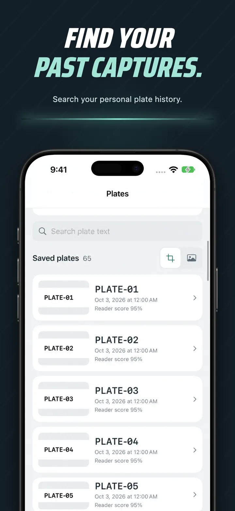

Car Plate Scan
नंबर प्लेट स्कैन करें और पुराने रिकॉर्ड फिर देखें
कैमरे से या फ़ोटो में नंबर प्लेट पढ़ें। नंबर की जाँच करें, जानकारी सहेजें और खोज, मैप और पसंदीदा की मदद से पुराने रिकॉर्ड ढूँढें।
App Store पर देखें
ऐप के बारे में
कैमरे से सीधे स्कैन करें या अपनी लाइब्रेरी से कोई फ़ोटो चुनें। जिन नंबरों की पहचान पक्की नहीं है, उनकी जाँच करें, प्लेट का टेक्स्ट सुधारें और अपने-आप सहेजने और दोबारा कैप्चर करने की सेटिंग बदलें।
प्लेट का क्रॉप और पूरी फ़ोटो रखें। साथ में कैप्चर का समय और उपलब्ध होने पर जगह की जानकारी भी सहेजें। एक ही प्लेट के अलग-अलग रिकॉर्ड फिर से देखें।
सहेजी गई प्लेटें खोजें, तारीख के हिसाब से या मैप पर रिकॉर्ड देखें और प्लेटों को पसंदीदा में रखें ताकि वे जल्दी मिलें।
स्क्रीनशॉट
स्क्रीनशॉट में ऐप अंग्रेज़ी में दिखाया गया है।





गोपनीयता और डेटा प्रोसेसिंग
Car Plate Scan वही रिकॉर्ड करता है जो आप कैप्चर करते हैं। यह वाहन मालिकों की पहचान नहीं करता और वाहन पहचान संख्या (VIN), रजिस्ट्रेशन की जानकारी या वाहन के इतिहास की रिपोर्ट नहीं देता।
नंबर प्लेट पढ़ने का मुख्य काम आपके डिवाइस पर होता है। क्लाउड में वैकल्पिक जाँच समर्थित डिवाइस पर Apple Private Cloud Compute का इस्तेमाल करती है और इसके लिए इंटरनेट कनेक्शन चाहिए। उपलब्धता ऑपरेटिंग सिस्टम, डिवाइस और सेवा की सीमाओं पर निर्भर करती है।
पहचान में गलती हो सकती है। नतीजों पर भरोसा करने से पहले उनकी जाँच करें। प्लेट के फ़ॉर्मैट और फ़ोटो की स्थिति का नतीजों पर असर पड़ता है। गाड़ी चलाते समय ऐप का इस्तेमाल न करें और दूसरों की निजता का सम्मान करें।
Car Plate Scan
कैमरे से या फ़ोटो में नंबर प्लेट पढ़ें। नंबर की जाँच करें, जानकारी सहेजें और खोज, मैप और पसंदीदा की मदद से पुराने रिकॉर्ड ढूँढें।
App Store पर देखें